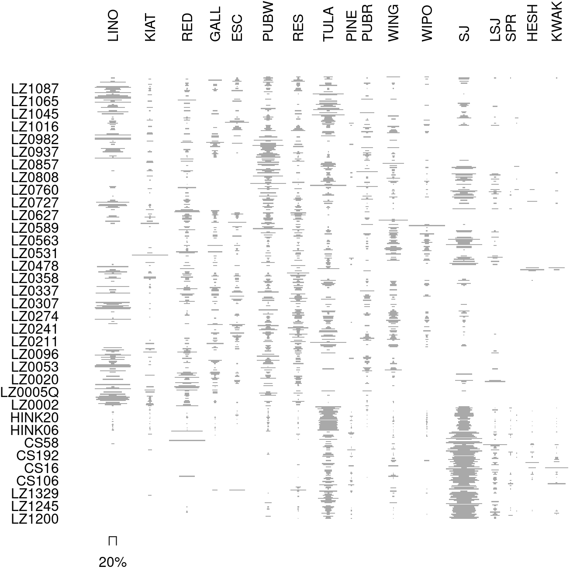
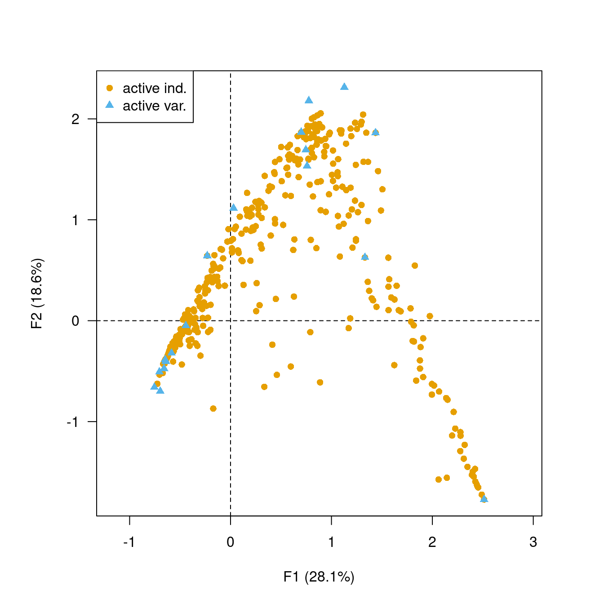
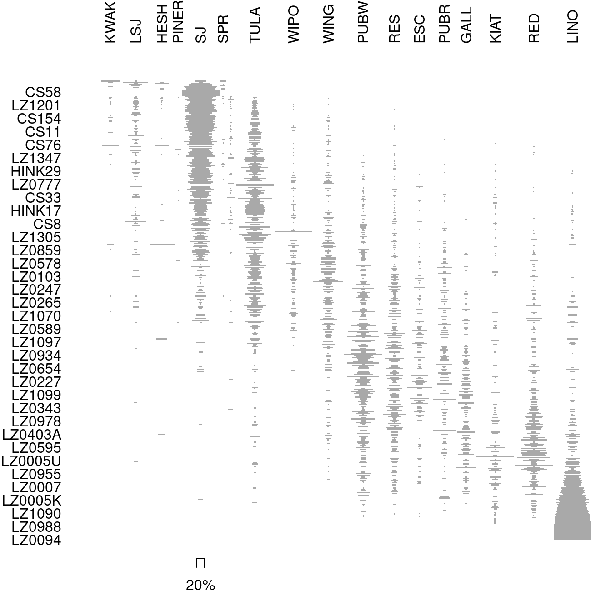

![]()
Matrix seriation in archaeology consists of chronologically ordering a set of archaeological contexts based on the distribution of different characteristics (artifact types). This process involves finding an arrangement by permuting the rows and/or columns of a contingency table.
The origin of matrix seriation is attributable to the British archaeologist Flinders Petrie (1899), who successfully established an important chronology for ancient Egypt in 1899. Petrie’s formulation of the method was in archaeological terms, devoid of any mathematical formalism. For this, we had to wait until the middle of the 20th century and the work of Brainerd (1951) and Robinson (1951), followed by the contributions of Kendall (1969b, 1969a). Seriation is not unique to archaeology, and some of the crucial advances have been made in other disciplines, notably the work of Bertin (1967) on graphic semiology and the work of Benzécri (1973) on correspondence analysis.
The matrix seriation problem is based on three archaeological conditions and two statistical assumptions, which Dunnell (1970) summarizes as follows.
The homogeneity conditions state that all the groups included in a seriation must:
- Be of comparable duration,
- Belong to the same cultural tradition,
- Come from the same local area.
The mathematical assumptions state that the distribution of any historical or temporal class:
- Is continuous through time,
- Exhibits the form of a unimodal curve.
Theses assumptions create a distributional model and ordering is accomplished by arranging the matrix so that the class distributions approximate the required pattern. The resulting order is inferred to be chronological.
Correspondence Analysis (CA) is an effective method for the seriation of archaeological assemblages. The order of the rows and columns is given by the coordinates along one dimension of the CA space, assumed to account for temporal variation. The direction of temporal change within the correspondence analysis space is arbitrary: additional information is needed to determine the actual order in time.
This post briefly illustrates how to perform a correspondence analysis based seriation.
## Load the zuni dataset
## Data from Peeples and Schachner 2012
data("zuni", package = "folio")
## Plot the original matrix
tabula::plot_ford(zuni)
## Get row and column permutations from CA coordinates along the first axis
(indices <- seriate_average(zuni, margin = c(1, 2)))#> <AveragePermutationOrder>
#> Permutation order for matrix seriation:
#> - Row order: 372 387 350 367 110 417 364 407 357 160 344 348 35...
#> - Column order: 18 14 17 16 13 15 9 8 12 11 6 7 5 10 4 2 3 1...seriate_average() returns the full results of the correspondence analysis. You can use dimensio to explore these results:
## Plot CA row coordinates (get a nice arch effect!)
dimensio::biplot(indices, type = "rows")
If the results of the correspondence analysis are satisfactory, we can then permute the rows and columns of the initial data matrix:
## Permute data matrix
permuted <- permute(zuni, indices)
## Plot permuted matrix
tabula::plot_ford(permuted)
References
Reuse
Citation
@online{frerebeau2023,
author = {Frerebeau, Nicolas},
title = {Archaeological Seriation},
date = {2023-08-22},
url = {https://www.tesselle.org/learn/seriation},
langid = {en}
}